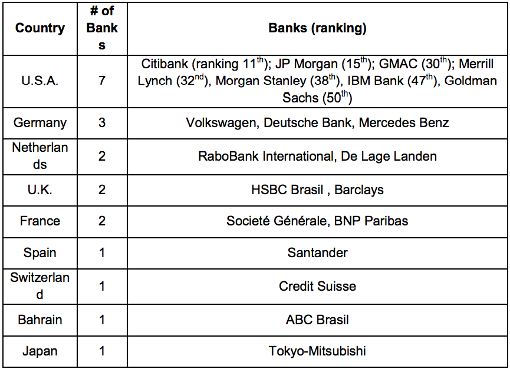

How Do I Get Paid (Methods of Payment)
How Does the Banking System Operate
Foreign Exchange Controls
U.S. Banks and Local Correspondent Banks
Project Financing
Web Resources
Return to top
Imports to Brazil are primarily handled using traditional letters of credit (L/C) or collections through established banks with correspondent banking agreements overseas. To a lesser extent, U.S. exporters may choose to operate on an open account or cash in advance basis once they have established a trustworthy relationship with their Brazilian buyers. (Note: given high interest rates and intermediary spreads, Brazilian buyers are likely to push for an open account or cash up front. We highly recommend that U.S. companies work with Ex-Im Bank insurance or guarantees to ensure payment).
For more information, please visit http://www.exim.gov.
Credit and Collection
Credit information on Brazilian companies is available for a fee from Dun & Bradstreet (http://www.dnb.com.br), Equifax (http://www.equifax.com.br) or SERASA, a Brazilian commercial information service company (http://www.serasaexperian.com.br) (SERASA recently merged with the Irish firm EXPERIAN, which has a strong presence in the U.S.). In the event of a commercial dispute or non-payment by a Brazilian importer requiring legal action, the U.S. exporter should contact a reputable legal firm with experience in international collections. Local collection agencies do not handle international disputes. The U.S. Commercial Service in Brazil can furnish lists of law firms through our Customized Contact List (CCL) or International Partner Search (IPS) services.
Return to top
The Brazilian banking system today is very efficient. Most banks have sophisticated Internet sites offering most, if not all, of their products and services. Bank branches are numerous and nearly all cities in the country have at least one major bank branch. The five largest banks have approximately 15,000 branches throughout Brazil. International operations are centralized at the bank’s headquarters, usually in São Paulo or Rio de Janeiro, although major branches at larger cities may handle routine operations involving trade finance. All Brazilian banks have a number of affiliated banks around the world.
Number of Foreign Banks and Origins
According to the Brazilian Central Bank, of the top 10 banks in Brazil ranked in December 2013 by net equity, three are state owned banks (Banco do Brasil, Caixa Econômica Federal, and BNDES, though latter is not a commercial bank), five are privately- held Brazilian banks (Bradesco, Itaú-Unibanco, Votorantim, Safra and BTG Pactual); and two are foreign (Banco Santander based in Spain and HSBC Bank based in England). U.S.-based Citibank ranks 11th.
Of the top 50 banks in Brazil, 20 are owned or controlled by foreign interests. The foreign banks are ranked by net equity as follows (as of December 2013):

Return to top
In Brazil, accounts can only be kept in local currency (Brazilian Reais, R$). For a Brazilian importer to remit funds to a seller in the U.S., the importer must purchase the corresponding foreign funds (U.S. dollars) by means of an exchange contract at any bank authorized by the Brazilian Central Bank. The exchange rate and related fees are negotiated directly between the purchaser of the foreign currency (the importer) and the authorized bank.
The Brazilian Central Bank is the federal agency entrusted to implement the federal government’s National Monetary Council (Conselho Monetario Nacional) policies to improve and stabilize the national financial system. Its functions include the control of foreign capital flows. (More information in #Chapter 3, “Selling Financial Services”)
Return to top
Following the acquisition of BankBoston by Brazil- based Itaú Unibanco in May 2006, U.S. presence in the Brazilian banking system was reduced to commercial activities by Citibank, investment banking by JP Morgan, Merrill Lynch, Morgan Stanley and BNY Mellon; consumer credit for automobiles and agricultural machinery and goods; and IT purchases by such U.S. corporations as General Motors (Banco GMAC), IBM (Banco IBM), Caterpillar (Banco Caterpillar), John Deere (Banco John Deere), Cargill (Banco Cargill), Ford (Banco Ford) and remittances (Western Union).
Brazil’s strong foreign trade sector and its increasing trade activities have led the country’s larger banks to increase their numbers of correspondent banks around the globe, in both new and expanding markets as well as with such traditional trading partners as the U.S.
Ex-Im Bank provides export insurance and working capital for U.S. exporters as well as guaranteed loans for Brazilian importers. Ask your bank’s international department about their affiliations with banks in Brazil, and inquire whether they work with Ex -Im Bank. Ex-Im also provides contact information for insurance brokers and guaranteed lenders.
Return to top
Direct Loan to Buyer by Brazilian Development Bank (in foreign currency)
Local companies can arrange at-market or even below-market direct loans with the Brazilian Development Bank (BNDES). In many cases, the funds can be used to purchase goods from U.S. exporters. Some companies observe that the loan approval process can be bureaucratic and consequently slow.
Import Finance by a Latin American Bank (in foreign currency)
Generally, a bank located in a Latin American country pays a U.S. exporter in advance for goods to be shipped to a buyer in the region. The bank is essentially providing the buyer a loan, which buyer will then repay per their financing agreement. In Latin American banks, this type of financing usually has a six-month grace period, after which the buyer must begin repaying the lending bank. Although extremely expensive for Latin American buyers, this option is frequently the only alternative available to them, particularly when they are purchasing major capital equipment. Ex-Im also offers a variety of trade and project finance options.
Return to top
U.S. Government:
Export-Import Bank of the United States (ExIm Bank) http://www.exim.gov
OPIC (Overseas Private Investment Corporation) http://www.opic.gov
SBA (Small Business Administration) Office of International Trade http://www.sba.gov/oit/
USAID (U.S. Agency for International Development) http://www.usaid.gov
USDA (U.S. Department of Agriculture) Commodity Credit Corporation http://www.fsa.usda.gov/ccc/default.htm
USTDA (U.S. Trade and Development Agency) http://www.ustda.gov/
Brazil Government:
Brazilian Central Bank www.bcb.gov.br
Brazilian Development Bank (BNDES) http://www.bndes.gov.br/SiteBNDES/bndes/bndes_en/
Return to table of contents